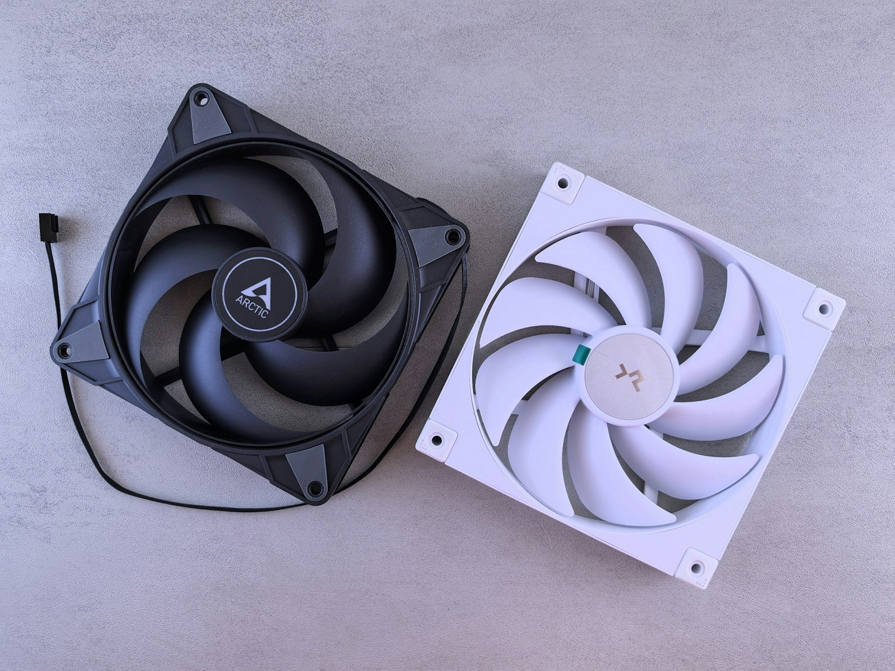

Sugerencias para alargar la vida útil de tu computadora
Con el uso diario, la computadora va sufriendo un desgaste natural. Aun así, eso no quiere decir
que se rompa al instante o que quede obsoleta en poco tiempo. Con algunos cuidados y buenos
hábitos podremos extender la vida útil de la PC para que pueda seguir funcionando adecuadamente
durante mucho tiempo sin problemas extraños.

La mayoría de estos consejos son simples, no es necesario saber mucho para seguirlos y podremos
aplicarlos fácilmente en nuestro día a día.
Recomendaciones
-
Mantener la computadora limpia:
poco a poco, el polvo se va acumulando dentro del gabinete. Este mismo polvo, es el que
obstruye los ventiladores y evita que circule bien el aire, provocando un aumento de la
temperatura. Limpiar la computadora cada
cierto tiempo, especialmente los ventiladores y las rejillas de ventilación, ayuda a
mantener un
buen flujo de aire dentro del gabinete y a evitar el sobrecalentamiento.
-
Controlar las temperaturas:
por lo general, las altas temperaturas reducen la vida útil de los componentes. Debemos
asegurarnos de que la computadora tenga una buena ventilación y que no esté ubicada en
lugares cerrados o con poca circulación de aire. Un gabinete bien ventilado marca una gran
diferencia en computadoras de escritorio; en notebooks, tenemos que evitar apoyarlas sobre
superficies que tapen las salidas de aire.
-
Apagar la computadora correctamente:
apagar la computadora adecuadamente evita problemas tanto en el sistema operativo como en
los
componentes. Forzar el apagado o desconectarla de la corriente puede causar errores, pérdida
de datos o daños a futuro. Siempre debemos apagar la computadora desde el sistema.
-
No sobreexigir el equipo:
ejecutar varios programas pesados al mismo tiempo o mantener aplicaciones abiertas sin
usarlas puede forzar los componentes innecesariamente. Por eso se recomienda cerrar los
programas que no se estén utilizando para reducir la carga de trabajo del procesador, la
memoria RAM y el almacenamiento.
-
Actualizar con frecuencia el sistema y los programas:
las actualizaciones no solo agregan funciones, también corrigen errores y mejoran la
estabilidad y seguridad del sistema. Tener el sistema operativo y los programas al día casi
siempre contribuye a un funcionamiento más estable y prolonga la vida útil del equipo. Sin
embargo, en ocasiones debemos investigar un poco más sobre las nuevas actualizaciones que
también pueden llegar con errores.
-
Proteger la computadora de problemas eléctricos:
las descargas eléctricas, las variaciones de tensión y los cortes de luz pueden dañar
gravemente los componentes. Por eso siempre es recomendable invertir en un buen
estabilizador o UPS para proteger la computadora, sobre todo en zonas donde los cortes de
luz son frecuentes.
Si aplicamos estos consejos, estaremos prolongando la vida útil de nuestra computadora
manteniendo un buen rendimiento con el paso del tiempo. Pequeños hábitos y cuidados pueden
marcar una gran diferencia en el funcionamiento de nuestro equipo.